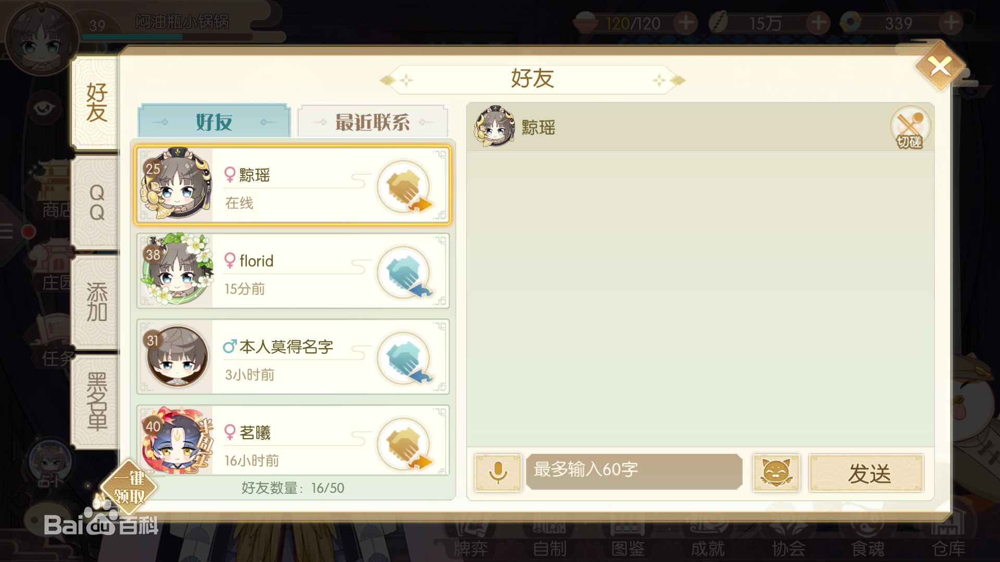

玩家从界面右上方，可以找到“好友”的图标，进入到好友界面里，去查询好友信息、添加好友、与好友切磋、相互赠送体力等操作。
在添加好友界面里，玩家直接找到系统推荐好友，进行添加好友。或者通过搜索功能，来更精准地找到需要添加的好友。每位玩家可添加的游戏好友上限为50人。
已添加的好友，会全部展示在好友界面里，玩家可以与在线的好友，进行聊天、切磋等操作。玩家可以与好友，进行相互赠送体力值。玩点击好友头像后方的握手图标，就可以把体力，送给好友了。
协会以弘扬中华传统美食文化为宗旨，是志同道合的成员们共同组建的交流团体。协会创建后，初始等级为1级。协会成员完成协会任务，可获得协会活跃度，协会活跃度达到本级上限后，可由会长或副会长进行协会升级。协会升级后，可增加协会的成员上限，并解锁相应等级的协会商店。
镇会食魂是协会的吉祥象征，代表这协会的菜系派别，今后或将在协会活动中出现。
协会构架为会长1名，副会长1名，秘书3名，其中，会长可任命或撤销副会长，处理入会申请、移除协会成员、禁言；副会长任命或撤销秘书，处理入会申请、移除协会成员、禁言；秘书可以处理入会申请、移除协会成员、禁言。
会长不可退出协会，将会长职位转让给副会长后，才可以退出协会。会长离线天数若大于7天，会长职位将会自动转让给其他协会成员。当协会人数大于1时，协会不可被解散。协会成员退出协会，需等待12个小时后，才能加入新的协会。
协会成员参与协会活动，可获得协会贡献，协会贡献可以用于协会商店兑换奖励。协会成员完成协会任务，可获得协会资金，协会升级、协会维护、进行协会活动，都需要消耗一定的协会资金。
协会日常活动，包括许愿、诗酒令、较艺堂、协会人、等，玩家积极参加协会活动，可获得协会贡献，或提升协会活跃度，是协会发展壮大的重要途径。